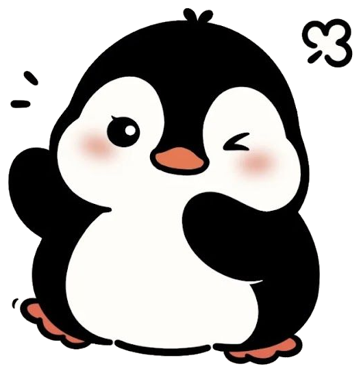

<!DOCTYPE html>
<html>
<head>
<meta charset="utf-8">
<meta name="viewport" content="width=device-width, initial-scale=1, user-scalable=no">
<link rel="preconnect" href="https://fonts.googleapis.com">
<link rel="preconnect" href="https://fonts.gstatic.com" crossorigin="">
<link href="https://fonts.googleapis.com/css2?family=Caveat:wght@600;700&family=Noto+Serif+SC:wght@400;500&family=Cormorant+Garamond:wght@500;600&family=Fredoka:wght@600;700&display=swap" rel="stylesheet">
<title>微博钢琴首页</title>
<style>
  html, body { margin: 0; padding: 0; height: 100%; overflow: hidden; background: oklch(85% 0.199 91.936); }
  * { box-sizing: border-box; user-select: none; -webkit-user-select: none; -webkit-tap-highlight-color: transparent; }
  #reading-time-btn { transition: transform .18s cubic-bezier(0.34,1.56,0.64,1), box-shadow .15s ease; }
  #reading-time-btn::before { content:''; position:absolute; top:7px; left:16px; width:38%; height:7px; background:rgba(255,255,255,0.52); border-radius:999px; pointer-events:none; }
  #reading-time-btn:hover { transform:scale(1.1); box-shadow:0 3px 0 #C86050,0 6px 22px rgba(220,100,70,.42)!important; }
  #reading-time-btn:active { transform:scale(0.93)!important; box-shadow:0 1px 0 #C86050,0 2px 8px rgba(220,100,70,.22)!important; }
</style>
</head>
<body>
<div id="root" style="position:fixed;inset:0;overflow:hidden;background:oklch(85% 0.199 91.936);"></div>
<canvas id="snow-cv" style="position:fixed;inset:0;width:100%;height:100%;z-index:95;pointer-events:none;"></canvas>
<div id="fade-over" style="position:fixed;inset:0;background:oklch(85% 0.199 91.936);opacity:0;pointer-events:none;transition:opacity .3s ease;z-index:100;"></div>

<script>
(function () {
  'use strict';

  // ---- audio ----
  let ac = null, master = null, lp = null, audioUnlocked = false;

  function ensureAudio() {
    if (!ac) {
      const AC = window.AudioContext || window.webkitAudioContext;
      ac = new AC();
      master = ac.createGain(); master.gain.value = 0.5;
      lp = ac.createBiquadFilter(); lp.type = 'lowpass'; lp.frequency.value = 3600;
      lp.connect(master); master.connect(ac.destination);
    }
    // iOS WebKit fix: play a silent 1-sample buffer within the user gesture.
    // resume() alone is not enough — WebKit requires an actual BufferSource
    // to be started inside the gesture to truly unlock audio output.
    if (!audioUnlocked) {
      audioUnlocked = true;
      const buf = ac.createBuffer(1, 1, ac.sampleRate);
      const src = ac.createBufferSource();
      src.buffer = buf;
      src.connect(ac.destination);
      src.start(0);
    }
    // Return the resume Promise so callers can await before scheduling notes.
    if (ac.state === 'suspended') return ac.resume();
    return Promise.resolve();
  }

  function playNote(freq) {
    ensureAudio().then(function () {
      // Read currentTime *after* resume resolves — on a suspended context
      // currentTime is frozen at 0, so notes scheduled at t=0 would be
      // in the past and silently skipped once the context starts.
      const t = ac.currentTime;
      const g = ac.createGain();
      g.gain.setValueAtTime(0.0001, t);
      g.gain.exponentialRampToValueAtTime(0.6, t + 0.006);
      g.gain.exponentialRampToValueAtTime(0.0006, t + 1.5);
      g.connect(lp);
      const o = ac.createOscillator(); o.type = 'triangle'; o.frequency.value = freq; o.connect(g);
      const g2 = ac.createGain();
      g2.gain.setValueAtTime(0.0001, t);
      g2.gain.exponentialRampToValueAtTime(0.16, t + 0.006);
      g2.gain.exponentialRampToValueAtTime(0.0004, t + 0.9);
      g2.connect(lp);
      const o2 = ac.createOscillator(); o2.type = 'sine'; o2.frequency.value = freq * 2.01; o2.connect(g2);
      o.start(t); o2.start(t);
      o.stop(t + 1.6); o2.stop(t + 1.0);
    });
  }

  // ---- snow ----
  const cv = document.getElementById('snow-cv');
  const cx = cv.getContext('2d');
  let flakes = [], snowIntensity = 0, lastPress = 0, lastFrame = performance.now(), emitAcc = 0;

  const isMobile = () => 'ontouchstart' in window || window.innerWidth < 760;

  function fitSnow() {
    const dpr = Math.min(2, window.devicePixelRatio || 1);
    cv.width = Math.round(window.innerWidth * dpr);
    cv.height = Math.round(window.innerHeight * dpr);
    cx.setTransform(dpr, 0, 0, dpr, 0, 0);
  }
  fitSnow();
  window.addEventListener('resize', fitSnow);

  function spawnFlake(x, intensity) {
    const SW = window.innerWidth;
    const mob = isMobile();
    const st = Math.random(); const r = (3.2 + st * st * 11.2) * (0.7 + intensity * 1.4) * (mob ? 0.7 : 1);
    flakes.push({
      x: x != null ? x + (Math.random() - 0.5) * 80 : Math.random() * SW,
      y: x != null ? -8 - Math.random() * 30 : -8,
      r, vy: (28 + Math.random() * 34) * (0.7 + intensity * 1.1),
      sway: 14 + Math.random() * 26, phase: Math.random() * Math.PI * 2,
      swaySpeed: 0.6 + Math.random() * 1.1,
      opacity: 0.55 + Math.random() * 0.4,
      rot: Math.random() * Math.PI, spin: (Math.random() - 0.5) * 1.4,
      hex: Math.random() < 0.4,
    });
    if (flakes.length > (mob ? 364 : 520)) flakes.shift();
  }

  function burstSnow(freq) {
    const now = performance.now();
    const dt = now - (lastPress || now - 2000);
    lastPress = now;
    const fast = Math.max(0, Math.min(1, (1100 - dt) / 900));
    snowIntensity = Math.min(1, snowIntensity + 0.12 + fast * 0.34);
    const lo = Math.log2(120), hi = Math.log2(1000);
    const tt = Math.max(0, Math.min(1, (Math.log2(freq) - lo) / (hi - lo)));
    const x = window.innerWidth * (0.18 + tt * 0.64);
    const burst = Math.round((5 + snowIntensity * 16) * (isMobile() ? 0.6 : 1));
    for (let i = 0; i < burst; i++) spawnFlake(x, snowIntensity);
  }

  function drawSnowflake(ctx, x, y, r, rot, alpha) {
    ctx.save();
    ctx.translate(x, y);
    ctx.rotate(rot);
    ctx.strokeStyle = 'rgba(255,255,255,' + alpha + ')';
    ctx.lineWidth = Math.max(0.7, r * 0.16);
    ctx.lineCap = 'round';
    const branch = r * 0.42, at = r * 0.62;
    for (let k = 0; k < 6; k++) {
      ctx.rotate(Math.PI / 3);
      ctx.beginPath();
      ctx.moveTo(0, 0); ctx.lineTo(0, -r);
      ctx.moveTo(0, -at); ctx.lineTo(branch * 0.8, -at - branch * 0.8);
      ctx.moveTo(0, -at); ctx.lineTo(-branch * 0.8, -at - branch * 0.8);
      ctx.moveTo(0, -r * 0.92); ctx.lineTo(branch * 0.55, -r * 0.92 - branch * 0.55);
      ctx.moveTo(0, -r * 0.92); ctx.lineTo(-branch * 0.55, -r * 0.92 - branch * 0.55);
      ctx.stroke();
    }
    ctx.restore();
  }

  function stepSnow(t) {
    const SH = window.innerHeight, SW = window.innerWidth;
    const dt = Math.min(0.05, (t - lastFrame) / 1000);
    lastFrame = t;
    snowIntensity = Math.max(0, snowIntensity - dt * 0.32);
    emitAcc += snowIntensity * dt * 60 * (isMobile() ? 0.7 : 1);
    while (emitAcc >= 1) { emitAcc -= 1; spawnFlake(null, snowIntensity); }
    cx.clearRect(0, 0, SW, SH);
    for (let i = flakes.length - 1; i >= 0; i--) {
      const f = flakes[i];
      f.y += f.vy * dt;
      f.phase += f.swaySpeed * dt;
      f.x += Math.sin(f.phase) * f.sway * dt;
      f.rot += f.spin * dt;
      if (f.y > SH + 12) { flakes.splice(i, 1); continue; }
      const fade = f.y > SH - 60 ? Math.max(0, (SH - f.y) / 60) : 1;
      if (f.hex) {
        drawSnowflake(cx, f.x, f.y, f.r, f.rot, f.opacity * fade);
      } else {
        cx.beginPath();
        cx.arc(f.x, f.y, f.r * 0.62, 0, Math.PI * 2);
        cx.fillStyle = 'rgba(255,255,255,' + (f.opacity * fade) + ')';
        cx.fill();
      }
    }
    requestAnimationFrame(stepSnow);
  }
  requestAnimationFrame(stepSnow);

  // ---- penguin jump ----
  let portraitJumpMax = 0, curPortrait = false;
  function jumpPenguin(freq) {
    const el = document.querySelector('[data-penguin]');
    if (!el) return;
    const lo = Math.log2(120), hi = Math.log2(1000);
    const t = Math.max(0, Math.min(1, (Math.log2(freq) - lo) / (hi - lo)));
    let h;
    if (curPortrait) {
      // straight-up hop; apex scales with pitch and tops out at the Sol key
      h = Math.max(6, Math.round(portraitJumpMax * 2.0 *  t * t));
    } else {
      h = Math.round(8 + t * t * 100);
      const rect = el.getBoundingClientRect();
      const headroom = Math.max(8, rect.top - 6);
      h = Math.min(h, headroom);
    }
    const squash = 0.05 + t * 0.06;
    try { if (el._anim) el._anim.cancel(); } catch (e) {}
    el._anim = el.animate([
      { transform: 'translateY(0) scale(1,1)', offset: 0, easing: 'cubic-bezier(.25,.6,.35,1)' },
      { transform: 'translateY(2px) scale(' + (1 + squash) + ',' + (1 - squash) + ')', offset: 0.12, easing: 'cubic-bezier(.2,.7,.3,1)' },
      { transform: 'translateY(' + (-h) + 'px) scale(' + (1 - squash * 0.7) + ',' + (1 + squash * 0.7) + ')', offset: 0.5, easing: 'cubic-bezier(.5,0,.7,.5)' },
      { transform: 'translateY(0) scale(' + (1 + squash) + ',' + (1 - squash) + ')', offset: 0.86, easing: 'cubic-bezier(.25,.7,.4,1)' },
      { transform: 'translateY(0) scale(1,1)', offset: 1 }
    ], { duration: 480 + t * 320, fill: 'none' });
  }

  // ---- layout calc ----
  const whiteFreqs = [261.63, 293.66, 329.63, 349.23, 392.00, 440.00, 493.88, 523.25, 587.33, 659.25, 698.46, 783.99, 880.00, 987.77];
  const whiteRot = ['-2deg', '1.5deg', '-1deg', '2deg', '-1.5deg', '1deg', '-2deg', '1.8deg', '-1.2deg', '2deg', '-1.6deg', '1.3deg', '-2deg', '1.5deg'];
  const blackFreqs = [277.18, 311.13, 369.99, 415.30, 466.16, 554.37, 622.25, 739.99, 830.61, 932.33];
  const blackBoundary = [1, 2, 4, 5, 6, 8, 9, 11, 12, 13];
  const blackRot = ['-1.5deg', '1deg', '-1deg', '1.5deg', '-1deg', '1.2deg', '-1.4deg', '1deg', '-1.2deg', '1.4deg'];

  function getLayout() {
    const w = window.innerWidth, h = window.innerHeight;
    const portrait = h > w;
    const logicalW = portrait ? h : w;
    const logicalH = portrait ? w : h;

    const kbW = portrait
      ? Math.min(logicalW * 0.88, 1160)
      : Math.min(logicalW * 0.66, 920);
    const whiteW = kbW / 14;
    const gap = Math.max(3, Math.round(whiteW * 0.06));
    const kbH = portrait
      ? Math.max(160, Math.min(logicalH * 0.46, whiteW * 5.0))
      : Math.max(120, Math.min(logicalH * 0.36, whiteW * 4.4, 350));

    const wRadius = Math.max(6, Math.round(whiteW * 0.14));
    const bRadius = Math.max(4, Math.round(whiteW * 0.08));
    const pressPx = Math.max(8, Math.round(kbH * 0.045));
    const yearFont = Math.max(14, Math.min(whiteW * 0.46, 40));
    const yearGap = Math.round(yearFont * 0.5);
    const phraseFont = Math.max(10, Math.min(logicalW * 0.0108, 15));
    const phraseGap = Math.round(kbH * 0.15);
    const phraseBlock = phraseFont * 1.25 + phraseGap;
    const belowBlock = yearGap + yearFont;
    const contentShift = portrait ? 0 : Math.round((belowBlock - phraseBlock) / 2);

    const phraseFontP = Math.max(10, Math.min(w * 0.03, 16));
    const topShiftP = portrait ? Math.round(h * 0.025) : 0;
    const phraseBottomP = Math.round(h / 2 - kbW / 2 - topShiftP);
    const keysLeftX = w / 2 - kbH / 2;
    const phraseLeftP = Math.max(8, Math.round(keysLeftX / 2 - phraseFontP / 2));

    const penguinW = Math.round(whiteW * 1.28);
    const penguinH = Math.round(penguinW / 0.965);
    const penguinLeft = Math.round((12.5 / 14) * kbW - penguinW / 2);
    const penguinTop = -penguinH;

    const ws = Math.max(3, Math.round(whiteW * 0.13));
    const wBshadow = ws + 'px ' + Math.round(ws * 1.4) + 'px 0 rgba(0,0,0,.12)';
    const wHshadow = Math.round(ws * 0.45) + 'px ' + Math.round(ws * 0.6) + 'px 0 rgba(0,0,0,.10)';

    const blackW = whiteW * 0.6;
    const blackH = kbH * 0.6;
    const bs = Math.max(2, Math.round(blackW * 0.16));
    const bBshadow = bs + 'px ' + Math.round(bs * 1.5) + 'px 0 rgba(0,0,0,.22)';
    const bHshadow = Math.round(bs * 0.4) + 'px ' + Math.round(bs * 0.6) + 'px 0 rgba(0,0,0,.18)';

    const octave = portrait ? 0.5 : 1;

    const solfegeList = ['Do','Re','Mi','Fa','Sol','La','Si','Do','Re','Mi','Fa','Sol','La','Si'];

    const stageTransform = portrait
      ? 'translateY(' + topShiftP + 'px) translate(-50%,-50%) rotate(-90deg)'
      : 'translate(-50%,-50%)';

    return {
      portrait, w, h, logicalW, logicalH,
      kbW, kbH, whiteW, gap, wRadius, bRadius, pressPx,
      yearFont, yearGap, phraseFont, phraseGap, contentShift,
      phraseFontP, topShiftP, phraseBottomP, phraseLeftP,
      penguinW, penguinH, penguinLeft, penguinTop,
      wBshadow, wHshadow, blackW, blackH, bBshadow, bHshadow,
      octave, solfegeList, stageTransform,
    };
  }

  // ---- render ----
  function render() {
    const L = getLayout();
    const root = document.getElementById('root');

    // white keys with solfège labels inside the same column flex cell
    let whiteKeysHTML = '';
    for (let i = 0; i < 14; i++) {
      const freq = whiteFreqs[i] * L.octave;
      const note = i % 2 === 1 ? L.solfegeList[i] : '';
      const rot = whiteRot[i];
      const noteLabelHTML = note
        ? `<div style="height:${L.yearFont}px;font-family:'Caveat',cursive;font-weight:600;font-size:${Math.round(L.yearFont*0.82)}px;line-height:${L.yearFont}px;color:#000;rotate:${rot};transform:${L.portrait ? 'rotate(90deg)' : 'none'}">${note}</div>`
        : `<div style="height:${L.yearFont}px;"></div>`;
      whiteKeysHTML += `<div style="flex:1;display:flex;flex-direction:column;align-items:center;gap:${L.yearGap}px;">
        <div
          data-key="white"
          ${i === 13 ? 'id="sol-key"' : ''}
          data-freq="${freq}"
          data-base="#ffffff"
          data-hit="oklch(85% 0.199 91.936)"
          data-press="${L.pressPx}"
          data-bshadow="${L.wBshadow}"
          data-hshadow="${L.wHshadow}"
          style="width:100%;height:${L.kbH}px;background:#ffffff;border-radius:${L.wRadius}px;rotate:${rot};cursor:pointer;touch-action:none;box-shadow:${L.wBshadow};transform:translateY(0);will-change:transform;-webkit-backface-visibility:hidden;backface-visibility:hidden;">
        </div>
        ${noteLabelHTML}
      </div>`;
    }

    // black keys
    let blackHTML = '';
    for (let i = 0; i < 10; i++) {
      const freq = blackFreqs[i] * L.octave;
      const left = (blackBoundary[i] / 14) * L.kbW - L.blackW / 2;
      const rot = blackRot[i];
      blackHTML += `<div
        data-key="black"
        data-freq="${freq}"
        data-year=""
        data-base="#111111"
        data-hit="oklch(75% 0.183 55.934)"
        data-press="${L.pressPx}"
        data-bshadow="${L.bBshadow}"
        data-hshadow="${L.bHshadow}"
        style="position:absolute;top:0;width:${L.blackW}px;height:${L.blackH}px;background:#111111;border-radius:${L.bRadius}px;left:${left}px;rotate:${rot};cursor:pointer;pointer-events:auto;touch-action:none;box-shadow:${L.bBshadow};transform:translateY(0);will-change:transform;">
      </div>`;
    }

    // landscape phrase
    const btnStyle = `flex-shrink:0;padding:12px 30px;background:#E8927A;border:2px solid #D4705A;border-radius:999px;box-shadow:0 4px 0 #C86050,0 5px 16px rgba(220,100,70,.30);color:#fff;font:700 14px 'Fredoka',sans-serif;letter-spacing:2px;text-shadow:0 1px 3px rgba(140,40,20,.4);cursor:pointer;user-select:none;overflow:hidden;display:flex;align-items:center;position:relative;`;
    const phraseHTML = L.portrait ? '' : `
      <div style="display:flex;align-items:center;gap:14px;width:100%;margin-top:7px;margin-bottom:${L.phraseGap - 7}px;">
        <div id="reading-time-btn" style="${btnStyle}">Alt-Tab</div>
        <div style="font-weight:300;font-size:${Math.round(L.yearFont*0.62)}px;line-height:1.25;color:oklch(31% 0.105 44);letter-spacing:.3px;font-family:'Georgia';"> ... yo yo yo yo ~~ ❤️</div>
      </div>`;

    // portrait phrase — same row as landscape but rotated -90deg into the left sidebar
    const sidebarW = Math.max(1, Math.round(L.w / 2 - L.kbH / 2));
    const phrasePortraitHTML = L.portrait ? `
      <div id="phrase-portrait" style="position:absolute;left:0;top:0;width:${sidebarW}px;height:100%;display:flex;align-items:center;justify-content:center;pointer-events:none;">
        <div style="transform:rotate(-90deg);display:flex;align-items:center;gap:14px;pointer-events:auto;">
          <div id="reading-time-btn" style="${btnStyle}">Alt-Tab</div>
          <div id="yoyo-text" style="font-weight:400;font-size:${Math.round(L.yearFont*0.6)}px;line-height:1.25;color:#000;letter-spacing:.3px;font-family:'Georgia';white-space:nowrap;"> ... yo yo yo yo ~~</div>
        </div>
      </div>` : '';

    // portrait penguin + heart — rendered upright (screen coords) in the left
    // column: a small ❤️ sits directly above the "yo yo ~~" text, with the penguin
    // standing on it. Final position + heart size are set in JS after layout
    // (see the L.portrait block below). On key press the penguin hops straight up
    // (see jumpPenguin), the loudest note peaking at the Sol key (#sol-key).
    const pPenguinW = Math.round(L.whiteW * 1.2);
    const pPenguinH = Math.round(pPenguinW / 0.965);
    const pHeart = Math.round(L.whiteW * 0.6);
    const penguinPortraitHTML = L.portrait ? `
      <div id="penguin-portrait" style="position:absolute;left:0;bottom:0;visibility:hidden;display:flex;flex-direction:column;align-items:center;pointer-events:none;z-index:80;">
        
        <div id="portrait-heart" style="font-size:${pHeart}px;line-height:1;margin-top:${-Math.round(pHeart * 0.42)}px;filter:drop-shadow(0 3px 5px rgba(0,0,0,.18));">❤️</div>
      </div>` : '';

    root.innerHTML = `
      <div style="position:absolute;left:50%;top:50%;width:${L.logicalW}px;height:${L.logicalH}px;transform:${L.stageTransform};transform-origin:center center;display:flex;flex-direction:column;align-items:center;justify-content:center;">
        <div style="width:${L.kbW}px;display:flex;flex-direction:column;align-items:stretch;transform:translateY(${L.contentShift}px);">
          ${phraseHTML}
          <div id="kb-rel" style="position:relative;width:100%;height:${L.kbH}px;">
            <div style="display:flex;gap:${L.gap}px;width:100%;height:100%;align-items:flex-start;">
              ${whiteKeysHTML}
            </div>
            <div style="position:absolute;left:0;top:0;width:100%;height:${L.kbH}px;pointer-events:none;">
              ${blackHTML}
            </div>
            ${L.portrait ? '' : `<div style="position:absolute;left:${L.penguinLeft}px;top:${L.penguinTop}px;width:${L.penguinW}px;height:${L.penguinH}px;z-index:80;pointer-events:none;will-change:transform;">
              
            </div>`}
          </div>
        </div>
      </div>
      ${phrasePortraitHTML}
      ${penguinPortraitHTML}
    `;

    bindKeys();

    // portrait: drop the bottom-left button/text down so the button's bottom
    // lines up with the bottom of the piano. The sidebar group is rotated -90deg
    // about its centre, so measure post-transform rects and shift the container.
    if (L.portrait) {
      const cont = document.getElementById('phrase-portrait');
      const btn = document.getElementById('reading-time-btn');
      const kb = document.getElementById('kb-rel');
      if (cont && btn && kb) {
        const delta = kb.getBoundingClientRect().bottom - btn.getBoundingClientRect().bottom;
        cont.style.top = delta + 'px';
      }

      // place the penguin + heart in the left column: heart sized a touch
      // narrower than the (rotated) Alt-Tab button, sitting directly above the
      // "yo yo ~~" text, with the penguin standing on top of the heart.
      const grp = document.getElementById('penguin-portrait');
      const yoyo = document.getElementById('yoyo-text');
      const heart = document.getElementById('portrait-heart');
      if (grp && yoyo && btn && heart) {
        const heartPx = Math.max(16, Math.round(btn.getBoundingClientRect().width * 0.8));
        heart.style.fontSize = heartPx + 'px';
        heart.style.marginTop = (Math.round(heartPx * 0.25)) + 'px';
        const yr = yoyo.getBoundingClientRect();
        grp.style.left = Math.round(yr.left + yr.width / 2) + 'px';
        grp.style.transform = 'translateX(-50%)';
        grp.style.bottom = Math.round(L.h - yr.top + Math.round(L.h * 0.012)) + 'px';
        grp.style.visibility = 'visible';
      }

      // max jump = distance from the resting penguin centre up to the Sol key
      // centre, so the loudest note's apex lands the penguin on the Sol key.
      const pe = document.querySelector('[data-penguin]');
      const sol = document.getElementById('sol-key');
      if (pe && sol) {
        const pr = pe.getBoundingClientRect();
        const sr = sol.getBoundingClientRect();
        portraitJumpMax = Math.max(0, (pr.top + pr.height / 2) - (sr.top + sr.height / 2));
      }
    }
    curPortrait = L.portrait;
  }

  // ---- key interaction ----
  const activePointers = new Map();

  function pressKey(el) {
    const freq = parseFloat(el.dataset.freq);
    playNote(freq);
    jumpPenguin(freq);
    burstSnow(freq);
    el.style.transition = 'transform .06s ease, background .06s ease, box-shadow .06s ease';
    el.style.transform = 'translateY(' + el.dataset.press + 'px)';
    el.style.background = el.dataset.hit;
    el.style.boxShadow = el.dataset.hshadow;
  }

  function releaseKey(el) {
    el.style.transition = 'transform .5s cubic-bezier(.18,1.5,.4,1), background .45s ease, box-shadow .5s ease';
    el.style.transform = 'translateY(0)';
    el.style.background = el.dataset.base;
    el.style.boxShadow = el.dataset.bshadow;
  }

  function onKeyDown(e) {
    e.preventDefault();
    const el = e.currentTarget;
    if (activePointers.has(e.pointerId)) return;
    activePointers.set(e.pointerId, el);
    el.setPointerCapture(e.pointerId);
    pressKey(el);
  }

  function onKeyUp(e) {
    e.preventDefault();
    activePointers.delete(e.pointerId);
    releaseKey(e.currentTarget);
  }

  function onKeyCancel(e) {
    if (!activePointers.has(e.pointerId)) return;
    activePointers.delete(e.pointerId);
    releaseKey(e.currentTarget);
  }

  function bindKeys() {
    document.querySelectorAll('[data-key]').forEach(el => {
      el.addEventListener('pointerdown', onKeyDown);
      el.addEventListener('pointerup', onKeyUp);
      el.addEventListener('pointercancel', onKeyCancel);
      el.addEventListener('lostpointercapture', onKeyCancel);
      el.addEventListener('contextmenu', e => e.preventDefault());
    });
  }

  // ---- init & resize ----
  document.addEventListener('click', function(e) {
    if (e.target.closest('#reading-time-btn')) {
      const year = localStorage.getItem('wb_last_year') || '2019';
      window.location.href = 'detailbyy.html?year=' + year;
    }
  });

  render();

  let resizeT;
  window.addEventListener('resize', () => {
    clearTimeout(resizeT);
    resizeT = setTimeout(() => { render(); }, 80);
  });
  window.addEventListener('orientationchange', () => {
    clearTimeout(resizeT);
    resizeT = setTimeout(() => { render(); }, 80);
  });
})();
</script>
</body>
</html>
